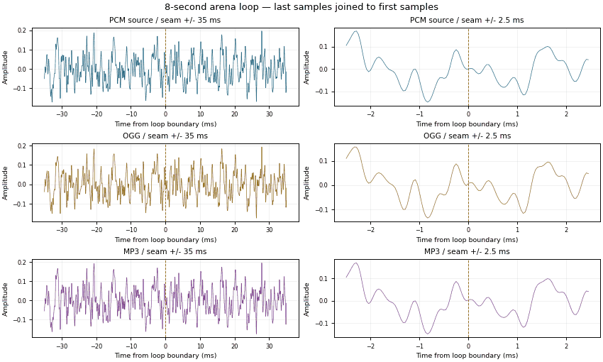

העיר שלי · מעבדת צליל
צלילי המגרש
14 צלילי כדורסל מקוריים. שופט, קהל והפרטים שבין הסלים.
ברירת המחדל היא עוצמת התמהיל המומלצת. רחש האולם מתנגן בלולאה עד עצירה.
בחרו צליל כדי להתחיל.
שמונה שניות, חיבור חלק
הגרף מציג את סוף הלולאה מחובר לתחילתה, במקור ובשני הפורמטים לאחר פענוח. הקו המקווקו מסמן את החיבור.

הלולאה הראשית משתמשת במאגר שמע מתוזמן. אם פתיחה ישירה מהדיסק חוסמת טעינה, השתמשו בנגן הגיבוי או פתחו דרך שרת מקומי כמפורט בדוח.